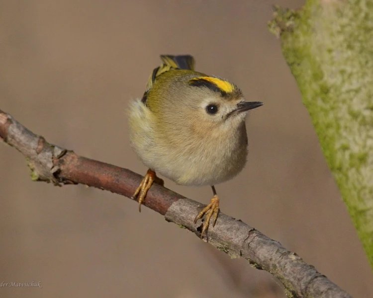
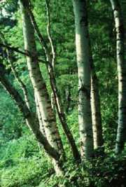
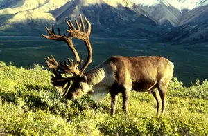
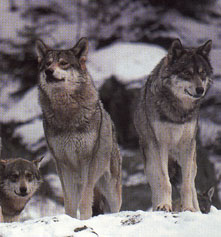
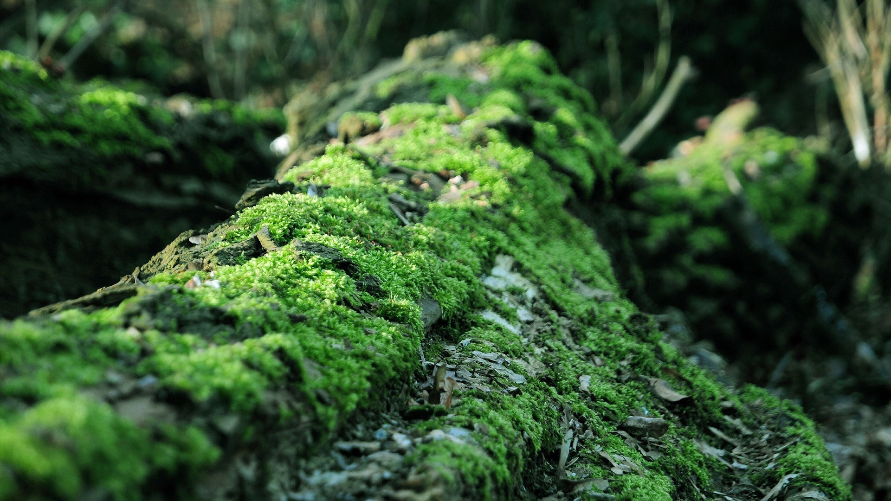
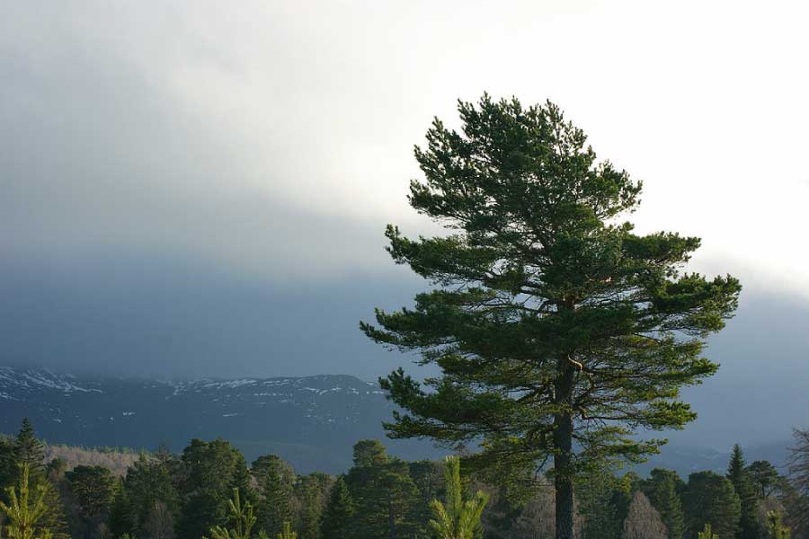

The goldcrest eats insects off of the trunk and branches of the white birch. This provides the goldcrest with food, and removes unwanted pests from the tree so that it stays healthy.
 In this relationship, the wolves benefit by killing and eating the reindeer. The reindeer are negatively affected and the wolves are positively affected.
 Here, the moss grows on the Scotch pine. The tree is unaffected by the organism, but the moss is benefited by its ability to grow on the tree.
 Sources found on 'Sources' in navigation bar.